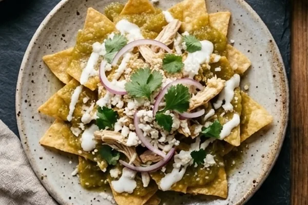
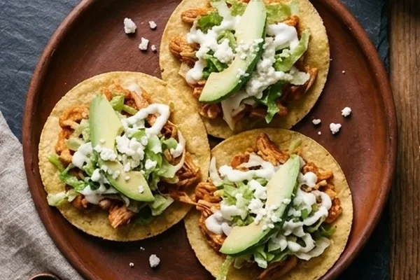

Catálogo Anidado · 12 Recetas Regionales con Ingredientes de Tijuana
Sistema Matricial de Recetas
Cruza línea de producto, nivel de picor y tiempo de cocción con renderizado directo en #recipe-grid-full mediante DocumentFragment.
1. Línea de Producto
2. Nivel de Picor
3. Tiempo en Cocina
